Urdaneta City University (UCU) actively fosters entrepreneurship that prioritizes ecological responsibility, local resource utilization, and healthy living. Through our incubation programs, student and faculty teams have launched startup ventures focused on zero-waste food processing, healthy nutrition, and sustainable materials. Below is the verified registry showcasing the 8 sustainability-related startups launched in December 2024:
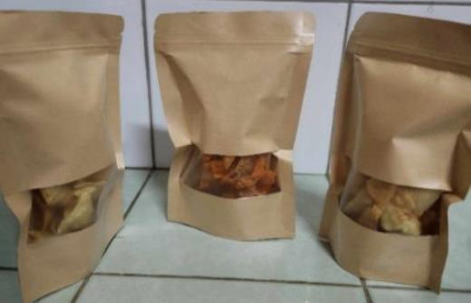
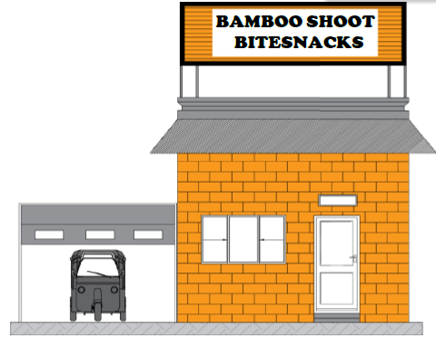
Bamboo Shoot Bitesnacks is a proudly local enterprise that transforms nature's humble bamboo shoots—particularly Kawayang Tinik (Bambusa blumeana) and Kawayang Killing (Bambusa vulgaris)—into crunchy, wholesome, and flavor-packed chips. Each bite combines the earthy essence of bamboo with the modern crave for convenient, healthy snacking.
Crafted with care and innovation, our Bamboo Shoot Bitesnacks come in five irresistible variants—Classic, Cheese, Spicy, Sour Cream, and Barbecue—offering a delightful fusion of Filipino ingenuity and global taste appeal. These snacks are naturally rich in fiber and nutrients, making them a guilt-free indulgence for health-conscious consumers who love a satisfying crunch.
Operating from 8:00 a.m. to 5:00 p.m., Bamboo Shoot Bitesnacks embodies sustainability and creativity, transforming an abundant local resource into a tasty symbol of eco-friendly entrepreneurship. Every pack supports local bamboo growers, promotes environmental awareness, and celebrates the versatility of the Philippine bamboo industry—one crunchy bite at a time.
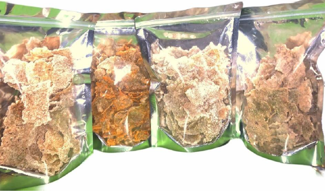
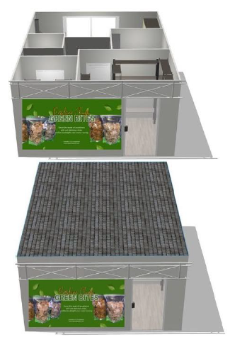
Green Bites is a proudly homegrown snack brand that brings a fresh twist to healthy indulgence through its signature purslane chips—a crunchy, flavorful treat made from one of nature's most nutrient-rich greens. Known locally as verdolaga or ulasiman, purslane is a powerhouse of vitamins and omega-3 fatty acids, and Green Bites transforms it into an irresistible guilt-free snack for every lifestyle.
Our chips come in four mouthwatering flavors—Classic, Cheese, Barbecue, and Sour Cream—crafted to delight both the health-conscious and the flavor-seeking snacker. Every bite captures the essence of sustainable, plant-based goodness, offering a delicious way to enjoy local produce while promoting wellness and eco-conscious living.
Conveniently located along MacArthur Highway, Nancayasan, Urdaneta City, Green Bites welcomes customers from 9:00 a.m. to 5:00 p.m. daily. Beyond our physical store, we make healthy snacking accessible nationwide through our online platforms on TikTok Shop, Lazada, and Shopee—bringing the crisp, green goodness of Green Bites straight to your doorstep.
At Green Bites, we believe that wellness shouldn't mean sacrificing taste. Every pack we produce is a celebration of local innovation, sustainability, and Filipino creativity—because healthy living starts with the choices we bite into.
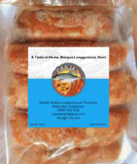
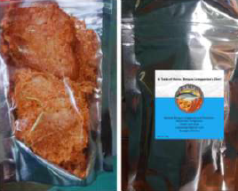
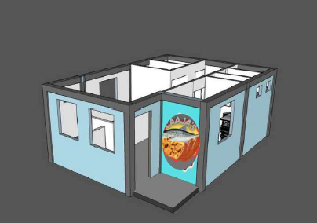
CAAJA’S Skinless Bangus Longganisa and Chicharon is a proudly Filipino food venture that redefines the way we enjoy our favorite comfort dishes—by blending tradition with healthy innovation. Specializing in premium products made from bangus (milkfish), CAAJA’S offers a delicious and nutritious alternative to pork-based longganisa and chicharon, perfect for those who value both flavor and wellness.
Our Skinless Bangus Longganisa is carefully crafted from the freshest milkfish, seasoned with a signature mix of herbs and spices that capture the savory-sweet taste Filipinos love—without the guilt. Complementing this is our Bangus Chicharon, a delightfully crispy snack made from bangus skin, offering not just crunch but a rich source of collagen that promotes youthful skin and tissue regeneration.
Bangus, known as the Philippines' national fish, is naturally low in fat and high in omega-3 fatty acids, supporting heart health and brain function. At CAAJA’S, we take pride in elevating this local staple into a modern, health-conscious treat that satisfies both taste and nutrition.
From breakfast tables to snack cravings, CAAJA’S Skinless Bangus Longganisa and Chicharon celebrates Filipino culinary ingenuity—proving that healthy can be hearty, and that every bite can be both flavorful and good for you.
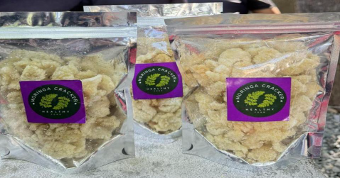
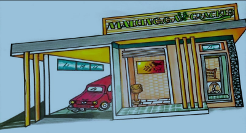
Malunggay (Moringa Oleifera) Cracker is a proudly Filipino food enterprise dedicated to turning nature's "miracle tree" into a crisp, healthy, and affordable snack for every household. Rich in vitamins A, C, and E, calcium, iron, and essential amino acids, malunggay has long been celebrated for its medicinal and nutritional value. By blending this local superfood with modern food processing and culinary creativity, Malunggay Cracker offers a wholesome alternative to traditional chips—nourishing the body while satisfying the Filipino craving for crunch.
Driven by innovation and sustainability, Malunggay Cracker strengthens its partnerships with local malunggay farmers, ensuring a steady, cost-efficient supply chain that supports community livelihoods. Continuous product research and development guides the introduction of new cracker variants to meet evolving consumer preferences, while content-driven marketing enhances brand recognition and customer loyalty across both local and digital marketplaces.
Operational excellence lies at the heart of the enterprise. Through strategic training programs that enhance employee skills, and through investments in functional, efficient equipment, Malunggay Cracker positions itself as a competitive leader in the emerging health-snack sector. The business maintains a strong focus on financial sustainability—balancing innovation, affordability, and social responsibility to ensure long-term growth.
Ultimately, Malunggay (Moringa Oleifera) Cracker is more than a snack—it is a movement toward wellness, sustainability, and Filipino ingenuity. Every bite embodies a vision of empowering local communities, promoting healthier lifestyles, and championing a greener, self-reliant future for the nation.
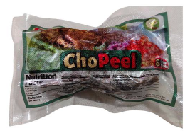
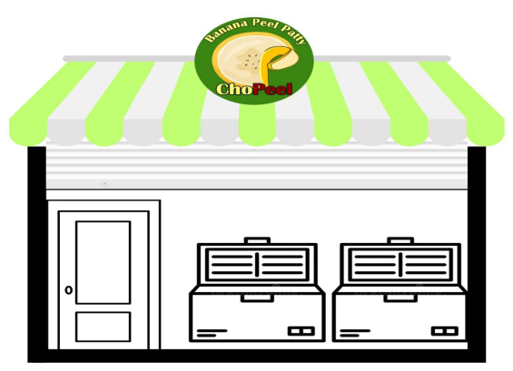
ChoPeel is an innovative food enterprise that transforms a commonly discarded byproduct—the banana peel—into nutritious, flavorful, and eco-friendly Banana Peel Patties. Anchored on sustainability and health consciousness, ChoPeel reimagines waste as a valuable resource, creating a delicious plant-based alternative that supports both the environment and the Filipino palate.
Rich in essential nutrients such as fiber, potassium, and antioxidants, ChoPeel's Banana Peel Patties offer an affordable yet wholesome substitute to traditional meat products, catering to health-conscious consumers and advocates of sustainable living. The brand's rising demand is fueled by its unique commitment to nutrition, affordability, and environmental stewardship.
To ensure financial viability and operational efficiency, ChoPeel builds strong partnerships with banana vendors—particularly those in local turon and banana cue industries—to source raw materials sustainably and cost-effectively. Continuous product innovation drives the expansion of its patty line, responding to evolving market tastes while promoting zero-waste production.
Empowering its workforce through skills training, investing in functional equipment, and embracing digital content creation for marketing and brand resonance, ChoPeel strives to strengthen its market presence and customer loyalty. Financial soundness is reinforced through diligent monitoring, sound investment, and community-centered collaborations that uphold both profit and purpose.
At its core, ChoPeel is more than a business—it is a sustainable food movement that champions environmental responsibility, economic inclusivity, and wellness. Every patty crafted by ChoPeel is a bite toward a cleaner planet, a healthier body, and a more conscious future.
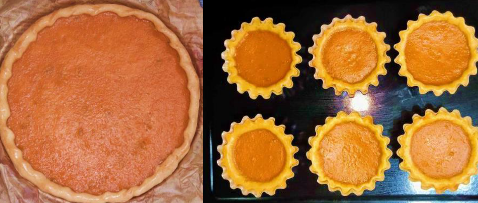
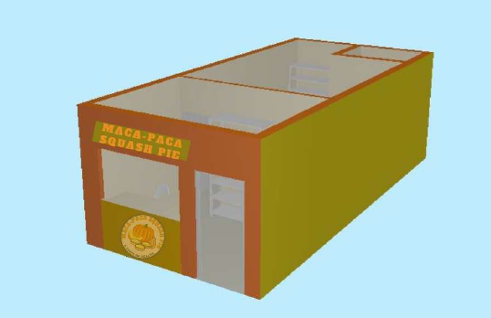
Maca-Paca Squash Pie is a proudly Filipino enterprise that combines nutrition, flavor, and affordability in every bite. Committed to offering a healthy twist on traditional pastries, the business specializes in freshly baked squash pies and tarts—delightfully rich in taste and packed with vitamins and minerals from locally sourced squash. Each pie embodies the perfect blend of home-baked goodness and nutritious indulgence.
To ensure accessibility for all customers, Maca-Paca Squash Pie offers its signature products in various sizes and prices: 9-piece Squash Tart – $2.98, Small Pie – $3.12, and Big Pie – $3.62 (retail price $3.41). This pricing strategy allows customers to enjoy a high-quality, wholesome treat at a reasonable cost, even as ingredient prices rise over time.
Backed by thorough strategic analyses, including PESTLE and SWOT-TOWS frameworks, the business continually evaluates both internal and external factors to strengthen competitiveness and adaptability. Supported by innovative marketing strategies, Maca-Paca Squash Pie uses both digital and traditional platforms to introduce its healthy, affordable products to a growing market of conscious consumers.
More than a bakery, Maca-Paca Squash Pie is a symbol of mindful Filipino entrepreneurship—promoting wellness, sustainability, and local pride. Every pie serves as a reminder that good food can be both delicious and nourishing, turning a simple squash into a golden opportunity for better living.
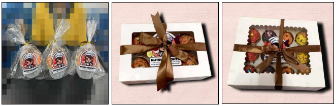
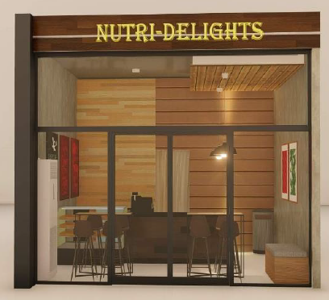
Nutri-Delights is a wholesome bakery venture dedicated to crafting vegetable- and fruit-based cupcakes that bring together the perfect balance of health and indulgence. As its name suggests, Nutri-Delights celebrates the joy of nutritious living through delicious creations that prove healthy food can also be irresistibly delightful.
The business offers four signature cupcake varieties—Carrot, Sweet Potato, Apple, and Banana—each thoughtfully made from fresh, locally sourced ingredients. These cupcakes are not just treats; they're tiny bundles of nourishment. Carrots provide Vitamin A and beta-carotene for good vision and immunity, Sweet Potatoes deliver fiber and antioxidants for sustained energy, Apples are packed with Vitamin C for vitality and wellness, and Bananas offer natural potassium and Vitamin B6 to support heart and muscle health.
With every bite, Nutri-Delights redefines the concept of snacking by turning everyday produce into guilt-free indulgence. The brand stands for sustainability, nutrition, and Filipino creativity, catering to families, students, and professionals seeking healthier dessert alternatives.
By merging traditional baking with a modern wellness vision, Nutri-Delights aims to become a trusted name in the healthy food industry—one that inspires people to make smarter, tastier choices. Every cupcake tells a story of freshness, balance, and the simple delight of living well.
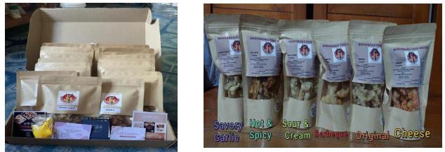
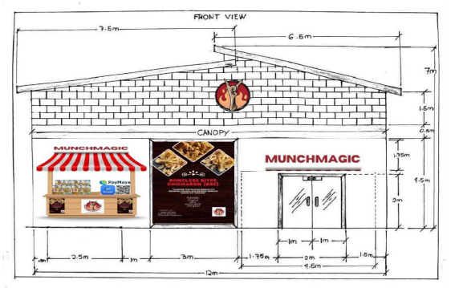
Boneless Bites Chicharon is an innovative Filipino snack brand that transforms the ordinary into the extraordinary—offering a crispy, collagen-rich delicacy made primarily from premium chicken feet. Through a carefully crafted aging process, each piece achieves a deeper, more savory flavor profile that sets it apart from traditional chicharon. The result is a guilt-free, protein-packed snack that's crunchy on the outside, flavorful at the core, and truly unforgettable.
Blending culinary tradition with modern innovation, Boneless Bites Chicharon delivers the nostalgic taste of Filipino street food in a refined, boneless form—perfect for today's health-conscious yet flavor-seeking consumers. With its natural collagen content, the product not only satisfies cravings but also supports skin health and tissue regeneration, making it both indulgent and beneficial.
To strengthen market presence, the business employs a dynamic mix of traditional and digital marketing strategies, reaching customers through social media campaigns, in-store promotions, and partnerships with local retailers. Supported by comprehensive financial planning, including precise cost analysis, pricing strategies, and revenue forecasting, Boneless Bites Chicharon is poised for long-term growth and sustainability in the competitive snack industry.
At its core, Boneless Bites Chicharon celebrates Filipino ingenuity—preserving the rich heritage of local snacks while elevating them for a modern, health-conscious market. Each bite embodies the brand's promise: crispy goodness, nutritious delight, and proudly homegrown flavor.